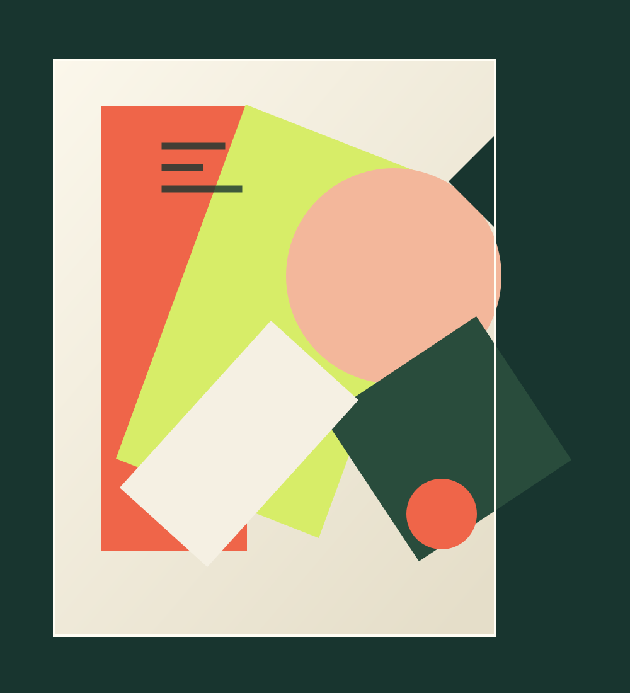
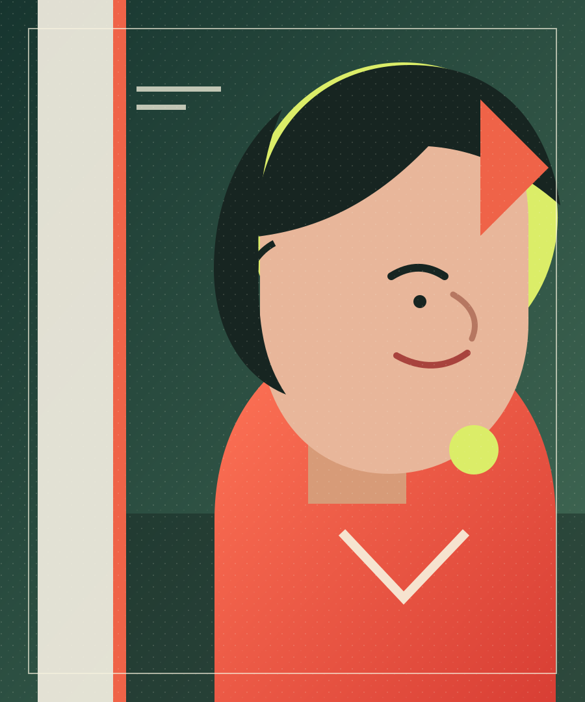

Casi materia
Espacio Umbral · sede ficticia
Artista visual · portafolio de ficción
Formas que guardan luz. Materia que encuentra otra vida.
Conoce su universo
01 / Sobre el artista

Milo Vértice es un artista visual ficticio que trabaja entre el collage, el ensamblaje y la luz.
En este portafolio de demostración, recortes de papel y objetos cotidianos se convierten en pequeñas arquitecturas. Cada dato biográfico y cada obra descrita aquí son imaginarios.
Práctica imaginaria · estudio sin ubicación real
02 / Recorrido inventado
Exposición ficticia de collage y papel translúcido.
Proyecto ficticio de ensamblajes y objetos encontrados.
Instalación ficticia sobre memoria y transformación.
03 / Agenda ficticia
Espacio Umbral · sede ficticia
Sala Prisma · sede ficticia